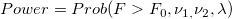
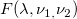
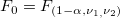
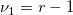
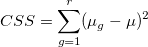

/math-7617376c4ee07c377351181ae25399e6.png "F\,\!") は非心F分布
は非心F分布一般的に、ANOVA 検定を行う際には、特定のサンプルサイズでの検出力、あるいは指定した検出力に必要なサンプルサイズを知りたいケースが多いです。PSS ANOVA1 Xファンクションを使うことで、検出力とサンプルサイズの両方を計算することができます。
検出力計算のアルゴリズム
ここでは各グループのサイズが等しいと仮定します。検出力の計算式は次の通りです。

ここでは非心F分布

に従います。
, 自由度/math-ae5787f61ff2a77a8838833e09777396.png "\nu _1 \,\!") および
および /math-d098596001dd1926cb1e564b8bdb9507.png "\nu _2 \,\!") のF分布の
のF分布の/math-d1c2a3034426827b01f7a1eba46a0c35.png "1-\alpha \,\!") 分位点
分位点

は分子の自由度/math-eef721978be397064d4b0f049b07ddbd.png "\nu _2=n*r-r \,\!") は分母の自由度
は分母の自由度
/math-58b7fc3474b021ff11c1a0df58a54060.png "n \,\!") はグループiごとの数
はグループiごとの数
/math-a01b83d7a33164700942b4b74732fd96.png "r \,\!") はグループ数
はグループ数
/math-6988616b360131d0eea0de525ed128d6.png "\lambda =\frac{n*CSS}{S^2}") は非心パラメータ
は非心パラメータ

/math-ee00b45dc165537d6c2e65b1cb765ff9.png "\mu _g \,\!") はg番目のグループの平均
はg番目のグループの平均/math-74b8eddf4b37de80c7c8eed1b64e46fc.png "\mu \,\!") は全体平均
は全体平均/math-6edc61472f77072704fc3735cc9e8684.png "CSS=D^2/2")
/math-d39862f4ab106d6caa45b522b4160ce9.png "\mu_{max}") は最大グループ平均
は最大グループ平均